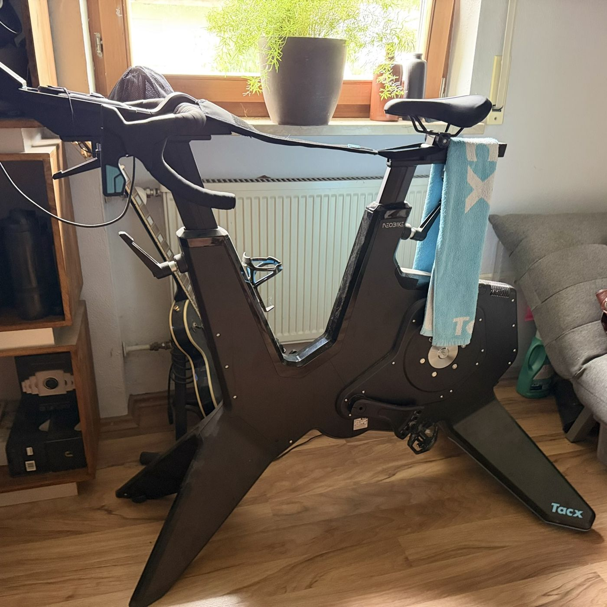

Garmin Tacx Neo Smart T8000 Bike

Kompletter Indoor-Smart-Bike-Trainer statt Rolle plus eigenem Rad: Kette und Rollenkontakt entfallen komplett, die Widerstandssteuerung übernimmt eine kontaktlose Elektrobremse.
Widerstand & Simulation
Maximaler Widerstand rund 2.200 W, simulierte Steigung bis 25 %, Genauigkeitstoleranz laut Hersteller ±1 %. "Road-Feel" bildet unterschiedliche Straßenoberflächen nach, "Gear-Feel" simuliert das Schaltgefühl beim virtuellen Gangwechsel.
Cockpit & Einstellungen
Rennrad-Q-Faktor, Sattel- und Lenkerposition frei einstellbar, Kurbellänge wahlweise 170, 172,5 oder 175 mm. Zwei aktive Schalt-/Bremshebel mit programmierbaren Funktionstasten, Schaltung frei auf beliebige Kettenblatt-/Kassettenkombination konfigurierbar. Zwei abnehmbare, geschwindigkeits- oder pulsgesteuerte Ventilatoren.
Anbindung
Bluetooth und ANT+ FE-C, kompatibel mit Zwift, TrainerRoad und der Tacx-eigenen Software. 4,5-Zoll-Display für Geschwindigkeit, Trittfrequenz, Leistung, Steigung und Übersetzung; Training auch im Stand-alone-Betrieb ohne Tablet oder Smartphone möglich.
Warum dieser Trainer
Für den Fitness-Erhalt außerhalb und am Rand der Saison, wenn draußen fahren nicht mehr sinnvoll möglich ist.